Created: 03/23/2012
By: Dimitar Rusev
Email: dimitar.rusev@hotmail.com
Thank you for purchasing my theme. If you have any questions that are beyond the scope of this help file, please feel free to email via my user page contact form here. Thanks so much!
This template uses <!DOCTYPE> declaration (which stands for HTML5) and CSS3 to control the style and layout of the page. All effects and animations in the page are powered by JavaScript (jQuery) and mostly all of the functionality like displaying tweets, Google Maps, image sliders and pulling images from Flickr. The template is a one page fixed layout (960px wide) and navigating through it is done by vertical scrolling. Since all (mostly) of the information is contained in a single page, the content is divided into separate sections each representing its own type of information. For example: personal information and mastered skills in "About section", latest projects you've worked on and simillar information in "Portfolio section", blog posts in "Blog section" etc. you get the point. I will cover all of the HTML markup contained in this template in a vertical manner, starting from top to bottom to help you understand the structure of the template so you can be familiar with it when you customize it to suit your own needs.
Keep in mind that this is not the installation instructions, just a basic overview. You can skip this part and go directly to the installation instructuons.
Like i stated above, this is a one page template and most of the content is contained here, divided into sections. The HTML starts with a header, slider, content sections and footer in the end. There are a couple of CSS files which control the layout and a bunch of JavaScript files to give functionality to the page.
So, let's start with the <header> first (the image bellow shows an example of it). All the content in the header is wrapped in a container <div> (gives fixed width of 960px). Bellow is the <div> tag with an ID of "hireMe" which is pretty much self-explenatory (it is the Hire me bubble) and contains an anchor tag which when clicked scrolls to the contact section of the page. Next we have another wrapper with an ID of "headerElementsWrapper" which wraps together the logo, header subtitle, social network icons and the search form. I assume that the only thing you will change here is the logo, header subtitle and the social network icons "href" path of the anchor tags. Nothing much going on here, just a basic header.
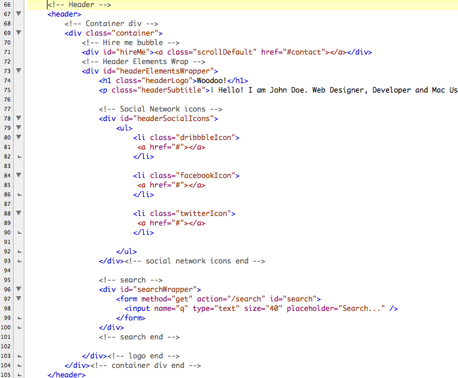In the image bellow you can see the typical structure of a content section in this template. The same structure repeats throughout every content section in the template.
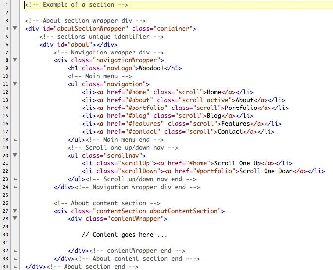All elements in one section are placed in a wrapper <div> (in this case the <div> with an ID of "aboutSectionWrapper"). The blank div with an ID of "about" is the sections unique identifier (i will explain why we need this later on). Content sections are divided into two columns: - One representing the navigation (from line 7 to line 24) floated left. - and other the actual content (from line 26 to line 34 in this case) floated right. I recommend you to check this page in Firefox with the Firebug add-on to give you a better visual overview of the elements in the page. The navigation is wrapped in a <div> with an ID of "navigationWrapper". Next the unordered list inside the "navigationWrapper" <div> is the templates main menu. List items inside the navigation <ul> contain <a> tags with an href pointing to the sections unique identifier (the one i mentioned earlier) so we can scroll through the sections in the page. Next we have the <ul> tag with a "scrollnav" class which is pretty much self-explanatory ( helps you to scroll one section up or down from the current section ). We are done with the navigation part, next up is the "contentSection" <div> followed by the "contentWrapper" <div> which gives the content column a nice 20px padding. Everything else is placed in here (don't worry about the other elements at this point as i will explain the important ones later on).
Similarly like the <header>, the <footer> also wraps its content in a container <div>. We have three main sections in the footer: latest tweets, flickr gallery and get social. The content in the first two sections (latest tweets and flickr gallery) is added dynamically by jQuery (I will explain this later on). So that is pretty much everything you should know about the HTML markup, once again i recommend to check the page with Firebug, i believe it will help you a lot.
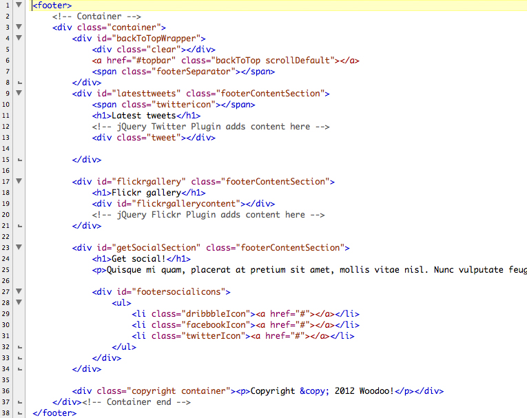This theme uses a couple of css files. I could've join them into one big file but it ended up this way mainly to avoid the confusion and simplify the styling of some elements. The general ones you will use are the ones shown in the image bellow:
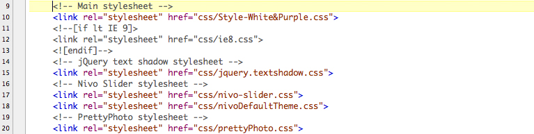The first one as shown in the image is the main stylesheet, and there are three variants of it included in the download to choose from: Style-White&Red.css, Style-White&Purple.css and Style-White&Blue.css. These stylesheets control almost the whole layout in the template. The second one is a stylesheet wrapped in a conditional statement, it is recognized by Internet Explorer only and it basically means "if the browser who requested this URL is less than IE9, include this stylesheet too". Mostly Microsoft's IE browsers interpret CSS and HTML behavior of elements differently and that's why we are including this additional ie8.css file, to override some styles in the Main stylesheet, so IE8 can render the elements correctly. All other browsers will ignore this lines of code as they see it as a comment. Next up is the jquery.textshadow.css file (you don't need to worry about this one). You will probably never edit it, it just stands there to help the jquery.textshadow.js to render text-shadows in IE. nivo-slider.css and nivoDefaultTheme.css are stylesheets for the image slider in the template (in this case the Nivo Slider). For example if you use SlidesJS Slider, SlidesJS-Slider.css is included. The same goes for the Orbit Slider, if you use it orbit-1.2.3.css is included. Finally the last stylesheet prettyPhoto.css is a stylesheet for prettyPhoto jQuery plugin which once again, you don't need to bother with that unless you want to apply some custom style.
At the very beginning in the main stylesheet(s) you will see the CSS Table Of Contents. Use this as a guide to help you find what your'e searching for. I believe it'll help you. Almost every line of code is well commented take a look at what it says. The main stylesheet(s) are written in CSS3 and as you probably know, IE is having difficulties to understand it. In order to force IE render the styling correctly CSS3 PIE is used. If you are not familiar with it you should not worry about it (its just those "behavior: url(js/PIE.php);" lines of code), everything is already set up. CSS3 PIE generally makes Internet Explorer 6-9 capable of rendering several of the most useful CSS3 decoration features. You can find More info here...
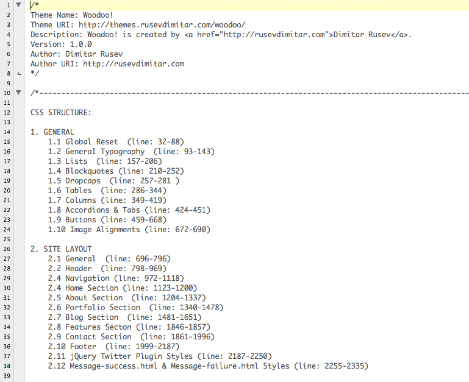A plenty of .js files are used in this template. Mostly they are just libraries which we are including in the page. However the woodoo-script.js is the one that controls everything. Here i will explain why all of these .js files are here for.
Modernizr is a small JavaScript library that detects the availability of native implementations for next-generation web technologies, i.e. features that stem from the HTML5 and CSS3 specifications. Many of these features are already implemented in at least one major browser (most of them in two or more), and what Modernizr does is, very simply, tell you whether the current browser has this feature natively implemented or not. More info here... jQuery is a fast and concise JavaScript Library that simplifies HTML document traversing, event handling, animating, and Ajax interactions for rapid web development. jQuery is designed to change the way that you write JavaScript. More info here... jQuery UI is based on jQuery and is included here basically for the Accordions and Tabs. More info here... jQuery Easing is also based on jQuery and gives advanced easing options used mostly for the scrolling effect. More info here... jQuery Text shadow library is a text-shadow polyfill for Internet Explorer 9 and below. More info here... jQuery Quicksand library helps reorder and filter items with a nice shuffling animation. More info here... jQuery image preloader is a nice image preloader script, adds a loading animation while the images are being loaded. More info here... PrettyPhoto is a jQuery lightbox clone. Not only does it support images, it also support for videos, flash, YouTube, iframes and ajax. It’s a full blown media lightbox. More info here... jQuery Tweet is a plugin that helps put tweets on the site. More info here... jQuery Flickr Feed pulls photos from a public flickr feed. More info here... Google Maps API helps us add an interactive map on our site in a couple of steps. More info here... And Finally woodoo-script.js is our custom script which initializes all the functions.
Like a said woodoo-script.js is our custom script which initializes all the functions. Check it out, the code is well commented. Make sure you read the comments. Here i will explain shortly what every function is doing. - Line 4 to 12 defines the Active and Blur states of the search input field. When its Active (on click) animates the width and the mag icon position to 150px in 70ms. On blur (when mouse is out) animates the width and the mag icon position back to 110px. Pretty simple.
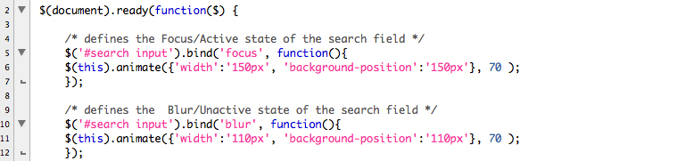- The code in line 15 grabs the pageWrapper and fades in when everything is loaded. All the content is wrapped in the pageWrapper <div> (except the top bar because we animate this one separately).
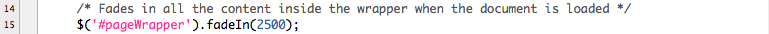- Line 17 to 25 grabs the navigation links and animates text indentation nicely when hovered and backwards (mouse out).
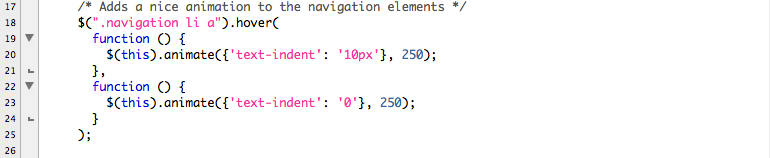- Line 27 to 37 defines the scrolling (every link in the main nav has a scroll class applied to it). There are two functions, one has a custom transition (jQuery easing - easeInOutBack) and the other is without (uses jQuery's swing by default). You can play with the timing and animations transition, make sure you check out the available jQuery easing transitions.
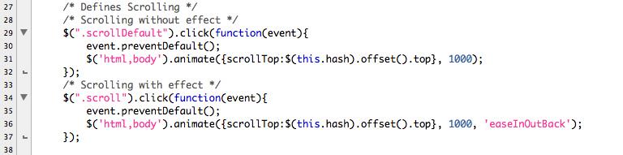- Line 39 to 63 defines the skill bars animation. The initial width of the skill bars is defined in the CSS (in the main stylesheet(s)) therefore non-JS user will still be able to see the skill bars, but they won't see the animation. First the width of the bar is set to zero and when that is complete another animation starts, animating the bar from 0% to some percent. Note that the animation starts when element with the .triggeranimation class applied to it is clicked. This .triggeranimation class is applied to every link in every instance of the main navigation that points to the "about section". This way the animation is displayed every time when the user navigates to the "about section".
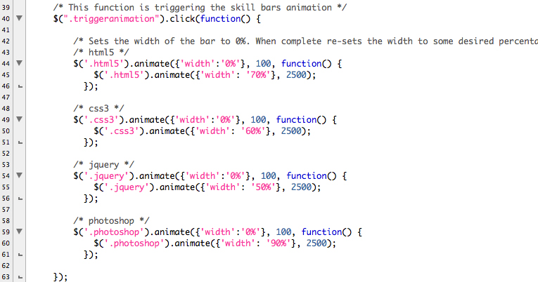- Line 66 to 69 we initialize the image preloader. Basically this is assigning the preloader (loading.gif) to the images inside some particular container. In this case the preloader is assigned to all images inside the #portfolioItemsList and #blogContentSection <div>.
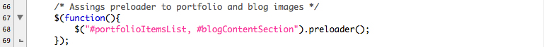- Similarly the code on line 71 to 79 creates the rollover effect on the images in the prtfolio and blog section. There are two divs on top of each other, inside the first is the thumbnail image and in the second is the rollover image. The one with the rollover image is not displayed by default. So basically what this function does is listening when the mouse is on that rollover <div> it fades it in, when mouse is out it fades it out.
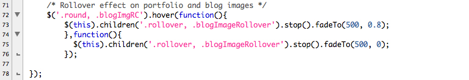- Example on line 80 to 97 is using Modernizr to check if the users browser supports HTML5 input placeholders or not. If it doesn't it creates them.
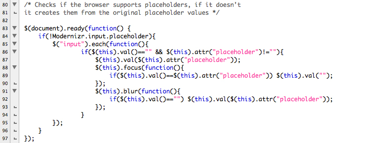- Line 102 to 141 we initialize the (jQuery Quicksand script) sorting on portfolio items and assigning the filter menu. On line 122 to 138 we re-initialize (callback) some functions. This is mainly because Quicksand clones the entire .portfolioSortableContentWrapper <div> and manipulates with its content (displays and hides elements with particual category as we request them by using the filter nav) therefore we need to re-assign every function we already assingned to the elements inside that container (in this case prettyPhoto and the Rollover effect).
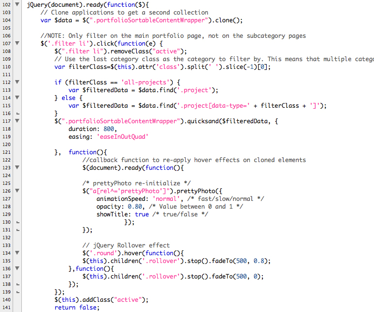- Line 149 to 152 we initialize prettyPhoto (lightbox) plugin.
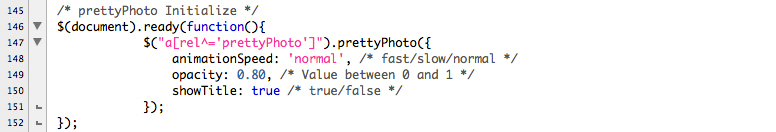- Line 154 to 166 we initialize jQuery Tweet plugin. This function doesn't show thumbnails. You can use the commented one bellow if you want thumbs to be shown.
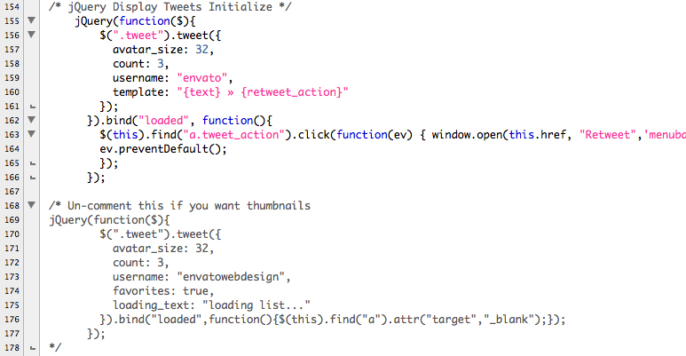- Line 182 to 198 we use jQuery textshadow plugin in conjunction with Modernizr. Modernizr checks if the users browser supports the CSS3 text-shadow property, if it does than nothing happens, if it doesn't then jQuery textshadow takes control (reads the text-shadows from the css and draws them). Personaly i don't like how text-shadows are displayed in IE so i commented out the most of the lines. You can uncomment them if you want to.
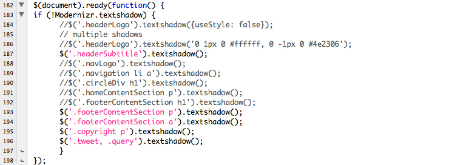- Line 200 to 219 we initialize jQuery Flickr Feed script and assign prettyPhoto to the images pulled from the particular feed.
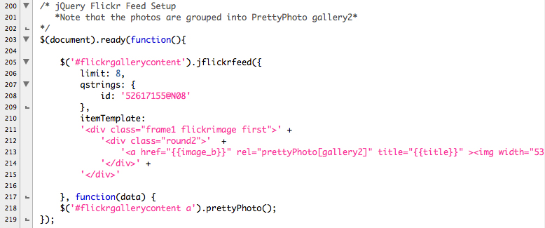- Line 224 to 227 initializes jQuery UI Accordions and Tabs.
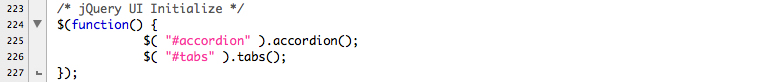- Line 231 When everything on the page is loaded animates the top bar.
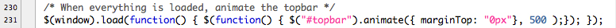I created the PSD to remind me of how the final product should look like, don't rely on it's measurments its just a quick mockup. I also included three nice loading PSD's. Actually they are animated so you can just change their color and create your own loading gif animations :)
First of all make a copy of the HTML folder and place it wherever you want, i put mine on the desktop as you can see in the image bellow.
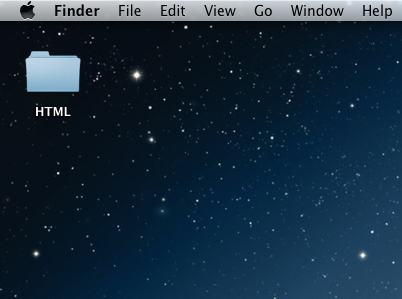Open it up, it should look like the one in the image.
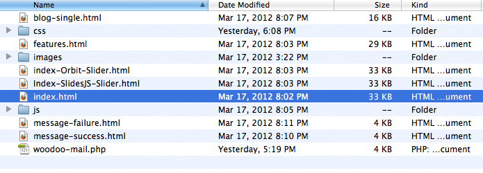Choose which index page you want to use for your site, rename it to "index.html" and delete the others. (I chose the one with the Nivo Slider which is already named "index.html")
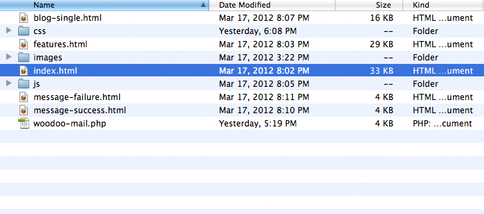Next up open the "index.html" page in a text editor or whatever you use for editing html. First you should edit the content in the <title> tag (line 6 in my case). Second chose a style, i chose White&Blue.css and update the href (link on line 10 in my case).
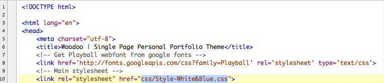Open up the nivoDefaultTheme.css file in a text editor (it is located in the css folder) and change the url path on line 12. Since i chose style White&Blue the path to the loading gif is "../images/style3/loading.gif" (for style White&Red the path is "../images/style1/loading.gif)" and similarly for style White&Purple.css the path is "../images/style2/loading.gif)".
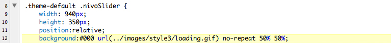For SlidesJS Slider you should open up SlidesJS-Slider.js (it is located in the js folder) and change the path in line 4 (only here the path must be relative to the HTML file).
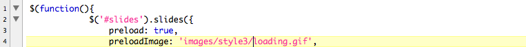If you used Orbit Slider you should open up orbit-1.2.3.css (it is located in the css folder) and change the url path on line 14.
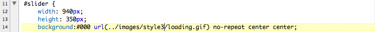There is one more place you need to update the src of your loading.gif. Open up jquery.preloader.js and change the path on line 72 (Once again in my case it's images/style3/loading.gif). Note that the path here is relative to the index.html.
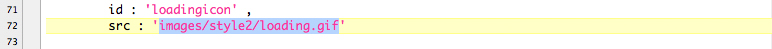Save and close.
Lets move on to the background image. There are three background images in the images folder: backgroundSample1.jpg, backgroundSample2.jpg and backgroundSample3.jpg. By default backgroundSample2.jpg is set. You can change that in your main stylesheet (again in my case its Style-White&Blue.css) on line 703
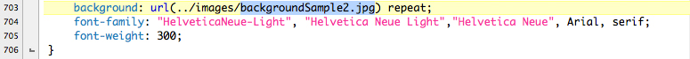You can change the logo in the header on line 74 and header subtitle on line 75. Also you should change the href of the social network icons on line 81,85 and 89.
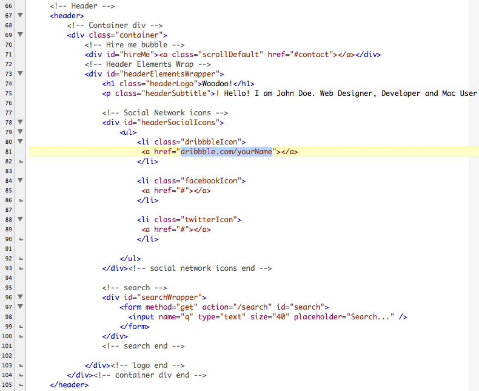Moving on to the slider (once again in my case its the Nivo slider) change the src path to your images on line 112,113,114,115 (you can add more if you like). Note that the images must be exactly 940x350, otherwise the slider will crush or might behave strangely. The text in the <title> tag will result as caption. As you can see in the image, the last slide uses HTML caption. To use HTML caption, simply create a <div> tag inside the div with an ID of slider-wrapper but outside the div with an ID of slider. Add a class nivo-html-caption to it and create some unique ID so you can point to it in the slides title attribute. More info here...
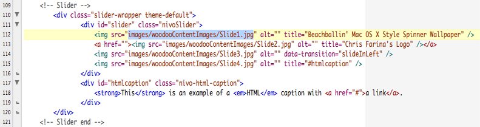Here slides are nested inside the slides_container div. A div with a class of slide is representing one slide. Once again note that images must be exactly 940x350, otherwise the slider will crush or might behave strangely. Also you can see an example of a caption in the image bellow.More info here...
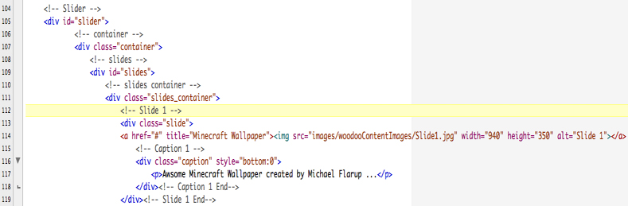This one is pretty straightforward. Images contained in the div with an ID of slider are the actual slides. You can see an examlpe of a caption in the image bellow. Only this time when you point to the caption you use the "data-caption" tag and the id of the caption holder. Like in the other examples above images must be exactly 940x350, otherwise the slider will crush or might behave strangely.More info here ...
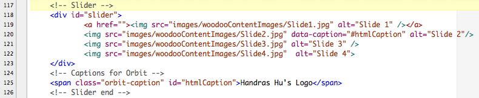This is the first section in the page and is pretty simple. Like i explained earlier, content sections are divided into two columns one representing the navigation and other the actual content. Here in the content column we have three <div> tags with a class of onethird and a buch of text inside. You can modify it, change it, delete it and put whatever you want in it. It's completely up to you.
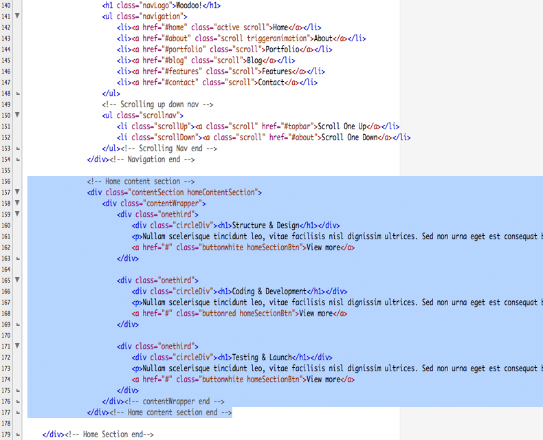This section is a placeholder for your personal information and skills. On line 212 change the src of the image and on line 213 put your own text. Once again this is completely up to you, do whatever you want.
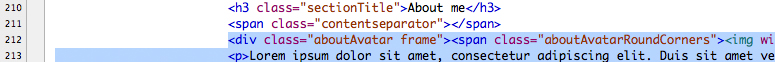The tricky part is the skill bars since they are being animated by jQuery. So, here is how they work: Every <span> tag inside an <li> tag has a class and an ID with a same name as the value in the <p> tag. The class defines the initial width of the skill bar that is applied to. The ID is unique identifier and helps us to tell jQuery which span to select and animate. Classes expandred and expandwhite define the color of the skill bar.
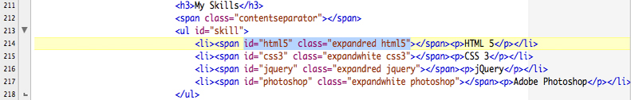I changed the html5 skill bar completely for demonstration. Lets say you want to add 3D Modeling to your skill list. You can see an example of the changed HTML markup in the image bellow:
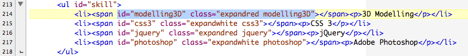Next up open your main stylesheet in a text editor (in my case its Style-White&Blue.css) and go to line 1330. Here we have the initial width of the html5 skill bar set to 70%. Since we changed our skill to 3D Modelling we also need to change the class (and the initial width if you want to) for the changes to take effect.
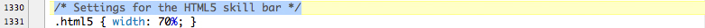In the image bellow you can see the changes (i also set the initial width to 45%)
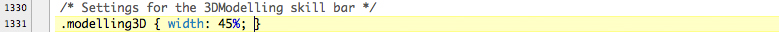The final result looks like this:
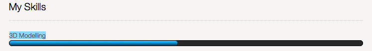Next up we need to tell jQuery how to animate our newly created skill bar. Open up woodoo-script.js in a text editor (you can find it in the js folder) and go to line 44. What this function basically does is: - listening for a click on a element with a triggeranimaton class applied to it - when that happens sets the initial width of the skill bar to 0% (In the css we already set the width to some percantege for the non-JS users) - and then animates it to the set percantage (in our case 45% for the 3D Modelling skill bar).
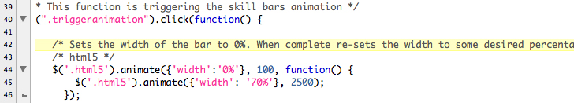In the image bellow you can see an example with the changes applied. And thats it, we have our animation.
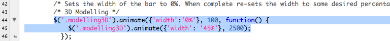You can repeat this proccess for the other skill bars.
The first elements in the portfolio content column are the sections title and the sorting navigation. As you can see in the image bellow they are pretty straightforward. A couple of classes are applied to the <li> tags in the sorting nav but no need to worry about them at this point as i will explain what they do later on.
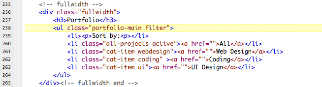Next we have the portfolio items nested in a unordered list with an ID of portfolioItemsList wrapped in a div with a class of portfolioSortableContentWrapper.
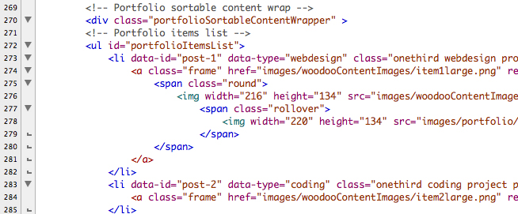The href in the <a> tag nested inside the <li> tag points to the full sized image. The value prettyPhoto[gallery1] in the <rel> attribute tells jQuery to open the image in a lightbox(prettyPhoto in this case), create a gallery and name it gallery1. Also a frame class is applied to the <a> tag which gives a nice frame to the thumbnail image. Nested inside the <a> tag there is a <span> tag with a class of round (gives round corners to the thumbnail image) applied to it. Next is the thumbnail image itself and we have another span with a class of rollover. Inside the rollover span is another image. The rollover span and the image inside it are displayed via jQuery when we hover on the thumbnail image. Here you only need to change the src of the thumnail image, the title. Everything else already is set-up.
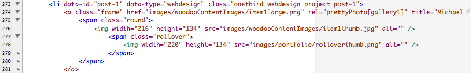Moving on to the filtering. Here the only thing you need to change is the names of the categories (that's the value in the data-type attribute and add a class with the same name), again everything else is set up.
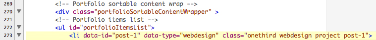Lets say that the first portfolio item is an image of a 3d model. So im going to name my category modelling3D for demonstration. In the image bellow you can see the changed example.
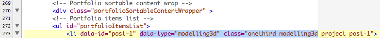Next i need to change the link in the sorting menu to point to that category. Bellow is the image of the sorting nav unchanged.
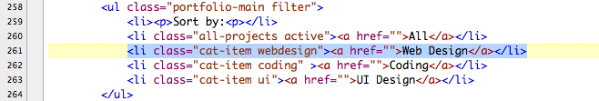And the next image shows the changes being done.
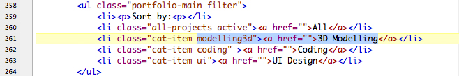As you can see in the final result under the 3D Modelling there is only one item. You can assign that same category to a multiple items in your portfolio to group them. As you probably know this is effect is done with jQuery Quicksand plugin. You can read the full documentation and see an examples on the plugins official site. More info here...
You can see an example of a blog post block of code in the image bellow. It is pretty straightforward, nothing complicated. First we have a div on line 347 with a class of blogPost which is a wrapper. Lines 348 and 349 are pretty much self explanatory. Next we have the image and it is nested inside a div with two classes: frame and blogPostImage. One level deeper we have another div with a class blogImageRC (gives round corners to the thumbnail) and inside it we have the thumbnail image itself and a div with a class of blogRollover which is displayed when we roll over the image. Inside the blogRollover div we have two <a> tags. The first one links to the full sized image and displays it in a lightbox (prettyPhoto) and the second one links to the full post.
There are only two things you need to change here: 1.Add your Google Maps API key and 2.Add your email address in the woodoo-mail.php
First go to developers.google.com/maps/, create account (if you already don't have one) and get your Google Maps API v3 key (you can google it if you dont know how). Once you have the key go to line 51 in the index.html and paste it over the "YOURKEY" keyword.
Next up open up googleMaps.js in a text editor (it is located in the js folder). You need to enter the Latitude and Longitude of your location (You can use this site) in line 3 inside the parentheses. Also you can play around with zoom level.
You are done with setting the map, next you need to add your email address in the woodoo-mail.php so the messages will be sent to your address. Open up woodoo-mail.php in a text-editor and replace youremailhere@somedomain.com on line 6 with your email address. Save and close.
Tweets are displayed dynamically by jQuery. Again everything is already set up, you only need to add your username in the woodoo-script.js file on line 161 (located in the js folder). As you can see in the image bellow, there is a commented code block, uncomment it if you want to display twitter thumbnails (remember to comment the other code block above or delete it). You can see more examples on the plugins site. More info here...
With the jQuery Flickr Feed Plugin you can pull photos from a public feed. The only thing you need to do is add the ID of the public flickr feed or user in the woodoo-script.js (located in the js folder) on line 210. You can use idgettr.com to find a particular flickr id. Note that the prettyPhoto[gallery2] name is reserved for the flickr images, so if you want to create a new gallery somewhere in your site and don't want the flickr images to interfere with it use some other name (for the gallery).
I've used the following fonts in this template:
I've used the following jQuery plugins in this template:
Other resources used:
Once again, thank you so much for purchasing this theme. As I said at the beginning, I'd be glad to help you if you have any questions relating to this theme. No guarantees, but I'll do my best to assist. If you have a more general question relating to the themes on ThemeForest, you might consider visiting the forums and asking your question in the "Item Discussion" section.
Dimitar Rusev